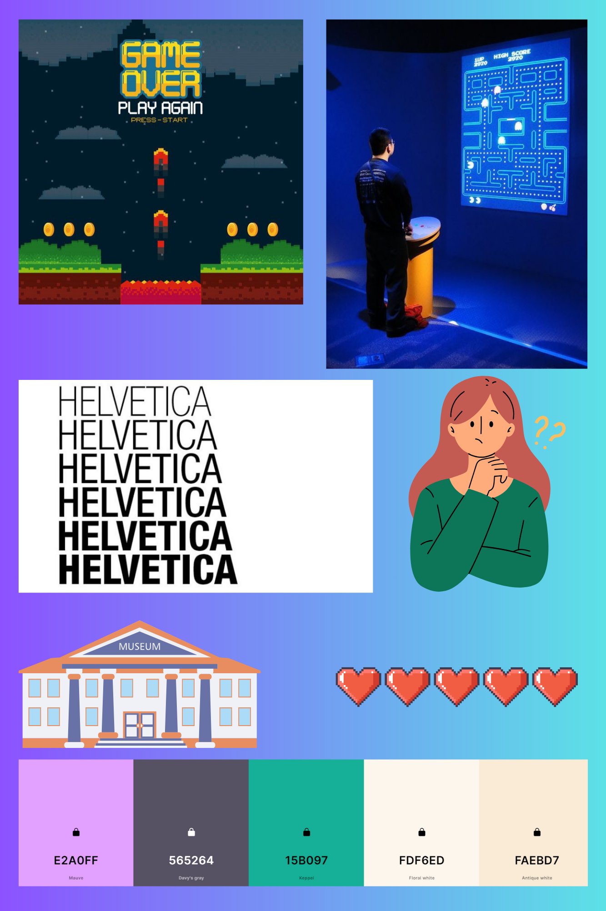

Task 1
- HRODC.com
Audience
- No idea who it is aimed at, not children but after that no idea. Made for University students but that is from only judging the content.
- The website does have links to social media pages and an email where it is assumed feedback can be given.
- The only experience this project can give is frustration and a headache.
Affordances
- Website isn’t simple to use. Navigation has been buried at the bottom of the webpage which takes a while to access with how long the page is.
- Cannot tell where you are to go.
- The images are used as buttons and are extremely bright and harsh to look out.
Contrast, Repetition, Alignment and Proximity
- Terrible use of colour and layout.
- No symmetry and balance.
- Makes the website hard to read and navigate.
- Whitehouse.gov
Audience
- Adults, or at least those in teens
- Not limited to those with very good IT skills
- content is appropriate
Affordances, Conceptual Models and Signifiers
- Purpose is to inform people about news in the United States of America, usuallly political.
- Very easy to use and navigate, clear pathways present.
- Very symetrical and in proportion.
- Images are used as thumbnails for articles and there is an image carosel also containg links at the top of the page
- All navigation is consistant, same with news stories and other info
Contrast, Repetition, Alignment and Proximity
- Background in white and the text is black, very big contrast, all sections are in blue to distinct different areas
- All navigation is consistant, same with news stories and other info
Content Design
- While not an original problem, still needed to as a trustworthy source for information.
- Very relavent content, you get what you expect of the website.
- Articles are professionally written and authors and sources can be traced back to their origins.
- Contains many references to other works
Task 2
Still thinking about my intended audience, considering towards adults, workers within
the museum and cultural heritage sector. If not them then parents and why it is a brillaint mode for learning
and creation. Therefore would have to use slightly more sophisticated language but not too complex as to not alienate people who do not have a background in the field.
Persona
A persona example could be "Susan" who is 30 years old. She has 2 children who are under 10 and wants to know more about how games and video games could help learning.
She would see the final website as a way to see video games
in a more educational light, and encourage her to take her children to museums with more interactivity to give them more to learn and engage with the content more.
Task 3
My Website Mood Board

My mood board is a current guide on how I want my webite to look. I have decided on Helvetica for the font and what i think is an okay colour palette.
It goes between both video game and museum iconography, including the idea of learning because that is the main message of the site.
I beleive the font is accessable and east to read and with my colour palette for background and also shading to reallly make some sections pop.
With my plsn to include my own images from research trips to my chosen museums, the imagery will change dependent on what I capture.